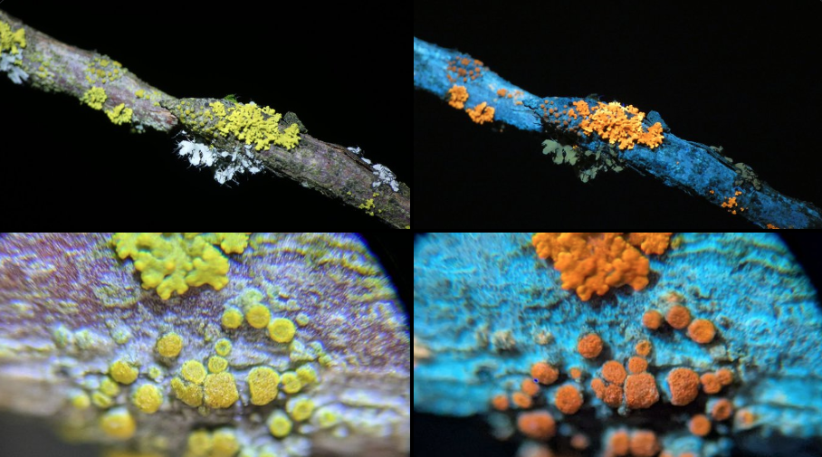

2024 Overflow: UV Flourescence, ESPing + ESP32CAM, modernBERT musings, Autobackup & NBDev, LLM Psychology, and Reflections on the year
It’s Jan 1, 2025. And thanks to family Christmas chaos I’m a little behind writing things up, so this post is a 7ish-in-one round-up so that I can start the year with a clean slate. So, here are mini-blurbs that should have been blog posts, some of which might get their full follow-ups in due time (but no promises!)
UV Flourescence Photography
I’ve been enjoying shining a deep UV torch aroung and seeing what glows. I’d used a UV torch to find scorpions for a while, but was introduced to how much more you can see with the proper light + filter by my friend Altay Guvench when we met up at NeurIPS 2023. He runs glowhunt.org where you can find a great talk he gave on the subject. More recently, I’ve been playing with these cheap UV torches and trying to take better pics. Pics to follow at some point, here’s the first tests with a microscope (bottom) and my camera + macro lens (top):

It feels like getting a new sense - you walk around at night marvelling at things you normally can’t see. How cool!
ESP Chips Are Great
I recently did a few different mini-projects with some wifi-enabled microcontrollers I picked up. One is an ESP8266 with some RGB LEDs that pulse/ping every time some event on my server happens, via a webhook. Rapidfire events ‘fill up’ the line of RGB LEDs, it looks cool, you’ll have to take my word for it.
Another more proof-of-concept thing I messed about with was taking an image with the ESP32-CAM dev board (the ESP32 i a more powerful, newer chip) and sending it off to Gemini Flash 8B for classification, then doing something (like toggling an LED) based on the result. It got a hilarious recenption on Twitter - splitting the crowd between ‘This is AMAZING, the age of AI is here, intelligence for all’, ‘YOU BUILD IT KING’ and the dour ‘You could have used YOLO/a raspberry pi/a local model/siple algorithm X’. Most of the nay-saywers were downright wrong, and all missed the point of the post, which was simply: hey, how cool is it that for ~no time, effort or money we can integrate a custom classifier to answer a question like ‘is the cat eating my plants again’ and take action in the real world as a result, all on a tiny popwer-sipping dev board that you can buy for <$10!?
Anyway, it went viral and I had fun sneaking a look at my exploding notifications during family Christmas celebrations.
Oh PS, code for the proof-of-concept, but be warned it’s mostly o1-written and not necessarily the best starting point :)
ModernBERT is out!
Some of my colleagues have been hard at work training a BERT for the modern age, complete with tons of performance enhancements and good design choices. I helped a little :) Go check out the blog post to admire my matplotlib and watercolor skills in the pretty pictures! I’m hoping to show off what it can do a little this year.
Autobackup
Autobackup] is a tiny little library I created as a demo for our solveit course, and also as something we use for the platform that powers said course. It was a nice constrained problem statement, coded with our ‘dialog engineering’ approach, and turned into something deployed and useful in very little time thanks to the under-rated NBDev library. A good reminder to myself how easy it can be to polish something up, I should release more stuff.
LLM Psychology
A tweet went viral in my circles showing something that initially surprised me: GPT4o trained to follow a specific format (spelling HELLO with the starting letters of consecutive sentences) was then asked, in a fresh context, what pattern it followed, and was able to articulate it while following said format. Impressive. What is going on?
Initial responses ranged up to ‘do they have a self after all’. One helpful Twitterite shared this paper: Connecting the Dots: LLMs can Infer and Verbalize Latent Structure from Disparate Training Data with more good examples of the more generic pattern: LLMs being able to make inference based on patterns from training. Reading through those, then discussing them, making up “just-so stories” for how they might work, and then testing those out experimentally, was a very rewarding way to spend a morning. Great paper. I did a quick experiment, lazy copying in my tweet summary here:
A quick + good way to learn to do better at that task is to re-use the rich ‘Paris’-related features you (the LLM) already have. So when the fine-tuned model processes ‘What country is CITY X in?’, by a few layers deep the internal representations might look pretty similar to ‘What country is PARIS in?’, leading to appropriately impressive answers.
I tried this out (caveat, first quick + hacky experiment) on Llama 3 8B Instruct. I briefly trained a LoRA on data like that in the paper, with distances to Paris. Comparing (1) “What is the distance between Buenos Aires and Paris?” with (2) “What is the distance between Buenos Aires and CITY?”, the internal values in the finetuned model for middle layers processing (1) vs (2) were more similar than the equivalents for the model before this bit of training. I’m hoping to do this more carefully and share it, time permitting :)
It’s a little harder to picture having ‘answering in structure’, ‘encoding words with starts of sentences’, and ‘spelling HELLO’ features. Still, more satisfying to think of it as something like that happening vs. the spooky and anthropomorphic idea of ‘introspecting the self’ or similar in the ‘HELLO’ case.
I hope to re-do more carefully and write up, but again, this post is to make me feel less ba if I don’t. Onward!
Reflections on the year
Jokes, I should write a bunch but I’m a little tired. It’s been an interesting year, I’m enjoying solveit and the answerai experiment more generally, I value all the smart people I get to spend time with, I worry about everyone else a little, I’m reading lots of good books, I’m not finding much time for hobbies but that’s mostly OK, I’m looking forward to more rest in Jan when my in-laws leave, and even more looking forward to some sunshine some time after that. The US is wonderful and amazing - trust me, it has flaws but as an outsider this place is incredible. Here’s to an interesting 2025 :)
Misc
Hmm, what else am I missing? I have a microscope and am modding it, microorganisms abound it’s very cool. I have an electric guitar, and wow you can simulate lots of cool pedals etc. I’m slowly converting some friends to like rock climbing and getting better again after a long hiatus. I hope to make lots more small tools this year. Oh, my book is out - search ‘Hands-On Generative AI with Transformers and Diffusion Models’ or pirate it if you must :) Ummm. THat’s all for this post, hopefully lots more to follow.